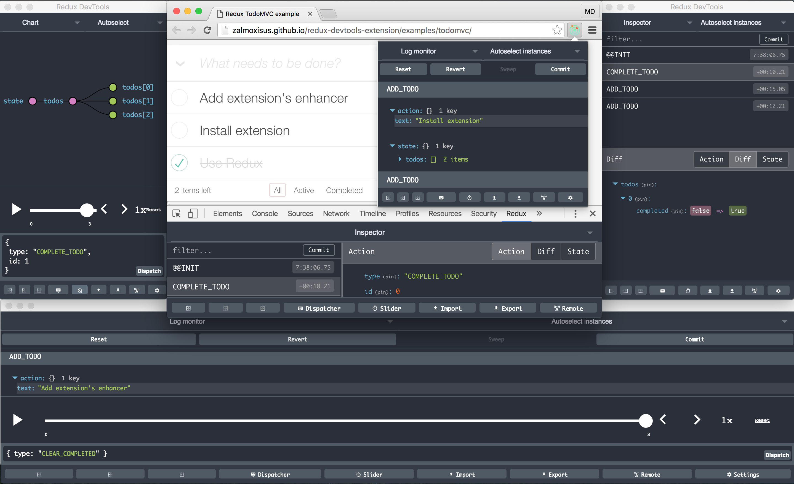
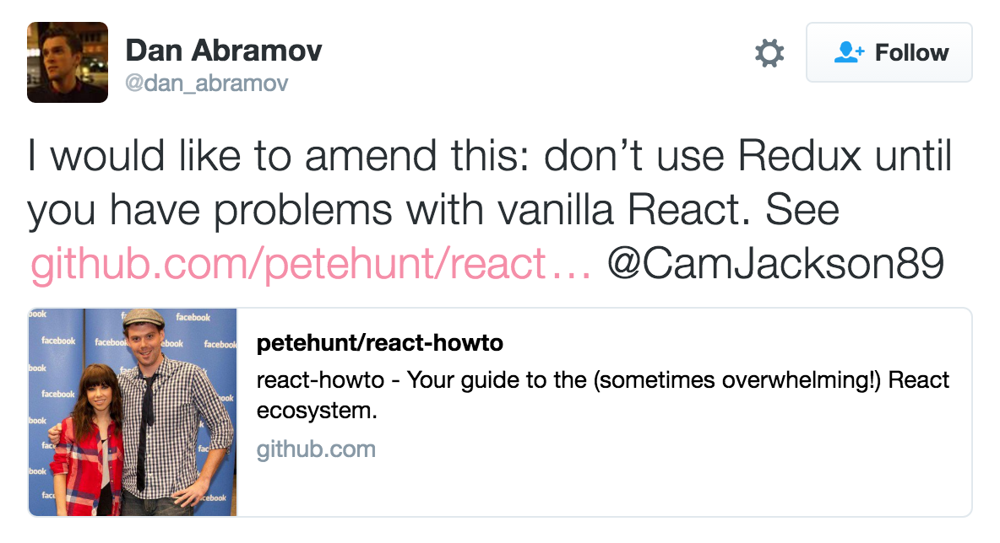

- Docker.Taipei 共同發起人
- Hacking Thursday 值日生
- COSCUP 開源工作坊講者
- PyCon APAC 講者
- MOPCON 講者
- 熟悉技能
- Linux, Docker, Azure, AWS
- Vim, Emacs, VSCode, Git
- Clojure, Python, Ramda.js, Lodash
- TypeScript, ES2015, React, Redux
- GitHub: https://github.com/bcbcarl
About Me
About Me
Agenda
Agenda
- Introduction to TypeScript
- Introduction to React
- Typed ES2015 React Application
- From JavaScript to TypeScript
- Use Redux to manage data flow
- Use Redux Saga to manage side effects
TypeScript: JavaScript that Scales
TypeScript: JavaScript that Scales
Introduction to TypeScript
Introduction to TypeScript
- It is a typed superset of JavaScript that compiles to plain JavaScript.
- It offers support for the latest and evolving JavaScript features to help build robust components.
- It can be used to develop JavaScript apps which runs on any browser, in Node.js, or in any JavaScript engine that supports ECMAScript 3+.
- It is a free and open source programming language.
- The compiler
tscis written in TypeScript. - It offers supports for JSX and React.
IDE and Editor Support
IDE and Editor Support


Language Features
Language Features
- Type annotations
- Compile-time type checking
- Type inference
- Type erasure
- Interfaces
- Enumerated type
- Generic
- Namespaces
- Tuple
- Await
Basic Types (1/2)
Basic Types (1/2)
let isDone: boolean = false; // Boolean
// Number
let decimal: number = 6;
let hex: number = 0xf00d;
let binary: number = 0b1010;
let octal: number = 0o744;
let fullName: string = `Carl Su`; // String
let sentence: string = `Hello, my name is ${fullName}.`;
let list: Array<number> = [1, 2, 3]; // Array
let x: [string, number]; // Tuple
x = ["hello", 10];
Basic Types (2/2)
Basic Types (2/2)
// Enum
enum Color { Red = 1, Green = 2, Blue = 4 }
let c: Color = Color.Green;
// Any
let notSure: any = 4;
notSure = "maybe a string instead";
// Void
const warnUser = (): void =>
alert("This is my warning message");
// Type assertions
let someValue: any = "this is a string";
let strLength: number = (someValue as string).length;
Quick Start
Quick Start
npm install -g tslint typescript npm init touch index.ts tslint --init tslint index.ts tsc --init tsc
const add10 = (x: number) => x + 10;
console.log(`add10(3): ${add10(3)}`);
var add10 = function (x) { return x + 10; };
console.log("add10(3): " + add10(3));
TSLint config file
TSLint config file
tslint.json:
{
"rules": {
"class-name": true,
"comment-format": [
true,
"check-space"
],
...
}
}
TypeScript config file
TypeScript config file
tsconfig.json:
{
"compilerOptions": {
"module": "commonjs",
"target": "es5",
"noImplicitAny": false,
"sourceMap": false
},
"exclude": [
"node_modules"
]
}
https://www.typescriptlang.org/docs/handbook/tsconfig-json.html
Integrating with Build Tools
Integrating with Build Tools
Browserify
npm install tsify browserify main.ts -p [ tsify --noImplicitAny ] > bundle.js
webpack
npm install ts-loader --save-dev
https://www.typescriptlang.org/docs/handbook/integrating-with-build-tools.html
Generate Declarations
Generate Declarations
tsc -d generates corresponding '.d.ts' file.
index.ts:
const add10 = (x: number) => x + 10;
index.d.ts:
declare const add10: (x: number) => number;
DefinitelyTyped
DefinitelyTyped
The repository for high quality TypeScript type definitions.
Get the definitions:
- GitHub repository
- NuGet package manager
- TypeScript Definition Manager
TypeScript Definition Manager
TypeScript Definition Manager
# Search for definitions. typings search tape # Find a definition by name. typings search --name react # Install non-global typings (defaults to "npm" source). typings install debug --save # Install with `--global`. typings install dt~mocha --global --save # Search and install by version. typings info env~node --versions typings install env~node@6.0 --global --save
Definition Sources
Definition Sources
npm- dependencies from NPMgithub- dependencies directly from GitHub (E.g. Duo, JSPM)bitbucket- dependencies directly from Bitbucketbower- dependencies from Bowercommon- "standard" libraries without a known "source"shared- shared library functionalitylib- shared environment functionality (mirror ofshared) (--global)env- environments (E.g.atom,electron) (--global)global- global (window.<var>) libraries (--global)dt- typings from DefinitelyTyped (usually--global)
The Future of Declaration Files
The Future of Declaration Files
React: JavaScript UI library
React: JavaScript UI library
React: Declarative
React: Declarative
React makes it painless to create interactive UIs.
Design simple views for each state in your application, and React will efficiently update and render just the right components when your data changes.
Declarative views make your code more predictable, simpler to understand, and easier to debug.
React: Component-Based
React: Component-Based
Build encapsulated components that manage their own state, then compose them to make complex UIs.
Since component logic is written in JavaScript instead of templates, you can easily pass rich data through your app and keep state out of the DOM.
React: Learn Once, Write Anywhere
React: Learn Once, Write Anywhere
We don't make assumptions about the rest of your technology stack, so you can develop new features in React without rewriting existing code.
React can also render on the server using Node and power mobile apps using React Native.
Introduction to JSX
Introduction to JSX
JSX is a JavaScript syntax extension that looks similar to XML.
You can use a simple JSX syntactic transform with React.
var Nav;
// Input (JSX):
var app = <Nav color="blue" />;
// Output (JS):
var app = React.createElement(Nav, {color:"blue"});
React Toolbox
React Toolbox
A set of React components implementing Google's Material Design specification with the power of CSS Modules.
import React from 'react';
import ReactDOM from 'react-dom';
import { Button } from 'react-toolbox/lib/button';
ReactDOM.render(
<Button label="Hello World!" />,
document.getElementById('app')
);
CSS Modules (1/2)
CSS Modules (1/2)
import React from 'react';
import styles from './table.css';
export default class Table extends React.Component {
render () {
return <div className={styles.table}>
<div className={styles.row}>
<div className={styles.cell}>A0</div>
<div className={styles.cell}>B0</div>
</div>
</div>;
}
}
CSS Modules (2/2)
CSS Modules (2/2)
<div class="table__table___32osj">
<div class="table__row___2w27N">
<div class="table__cell___1oVw5">A0</div>
<div class="table__cell___1oVw5">B0</div>
</div>
</div>
- You have to use
camelCaseCSS class names. - You have to use
stylesobject whenever constructing a className. - Mixing CSS Modules and global CSS classes is cumbersome.
- Reference to an undefined CSS Module resolves to undefined without a warning.
React CSS Modules
React CSS Modules
Seamless mapping of class names to CSS modules inside of React components.
- You are not forced to use the
camelCasenaming convention. - You do not need to refer to the
stylesobject every time you use a CSS Module. - There is clear distinction between global CSS and CSS Modules.
<div className='global-css' styleName='local-module'></div>
Typed CSS Modules
Typed CSS Modules
/* styles.css */
@value primary: red;
.myClass { color: primary; }
/* styles.css.d.ts */ export const primary: string; export const myClass: string;
/* app.ts */
import * as styles from './styles.css';
console.log(`<div class="${styles.myClass}"></div>`);
console.log(`<div style="color: ${styles.primary}"></div>`);
React Developer Tools (Google Chrome)
React Developer Tools (Google Chrome)
React Developer Tools (Mozilla Firefox)
React Developer Tools (Mozilla Firefox)
Hello from TypeScript and React!
Hello from TypeScript and React!
Typed ES2015 React Application
Typed ES2015 React Application
import * as React from "react";
export interface HelloProps { compiler: string; framework: string; }
export class Hello extends React.Component<HelloProps, {}> {
render() {
return <h1>Hello from {this.props.compiler} and {this.props.framework}!</h1>;
}
}
import * as React from "react";
export class Hello extends React.Component {
render() {
return React.createElement(
"h1", null, "Hello from ", this.props.compiler, " and ",
this.props.framework, "!");
}
}
From JavaScript to TypeScript
From JavaScript to TypeScript
Migrating From JavaScript (1/2)
Migrating From JavaScript (1/2)
Migrating from JavaScript to TypeScript:
- Add TypeScript config file.
- Change file extension from
.jsx?to.tsx?. - Supress errors using
any. - Write new code and make as little use of
anyas possible. - Use ambient definitions for third party JavaScript code.
- Declare missing modules (e.g.:
declare module "humps";). - Declare non-js resources (e.g.:
declare module "*.css";).
https://basarat.gitbooks.io/typescript/content/docs/types/migrating.html
Migrating From JavaScript (2/2)
Migrating From JavaScript (2/2)
Including .jsx? files with --allowJs:
tsconfig.json:
{
"compilerOptions": {
"module": "es2015",
"target": "es2015",
"allowJs": true,
}
}
https://medium.com/@clayallsopp/incrementally-migrating-javascript-to-typescript-565020e49c88
Redux: Predictable State Container
Redux: Predictable State Container
Motivation
Motivation
Our code must manage more state than ever before.
This complexity is difficult to handle as we're mixing two concepts that are very hard for the human mind to reason about: mutation and asynchronicity.
Redux attempts to make state mutations predictable by imposing certain restrictions on how and when updates can happen.
These restrictions are reflected in the three principles of Redux.
Three Principles
Three Principles
Redux can be described in three fundamental principles:
- Single source of truth
- State is read-only
- Changes are made with pure functions
Single source of truth
Single source of truth
The state of your whole application is stored in an object tree within a single store.
console.log(store.getState());
{
visibilityFilter: 'SHOW_ALL',
todos: [{
text: 'Consider using Redux',
completed: true,
}, {
text: 'Keep all state in a single tree',
completed: false
}]
}
State is read-only
State is read-only
The only way to change the state is to emit an action, an object describing what happened.
store.dispatch({
type: 'COMPLETE_TODO',
index: 1
})
store.dispatch({
type: 'SET_VISIBILITY_FILTER',
filter: 'SHOW_COMPLETED'
})
Changes are made with pure functions
Changes are made with pure functions
To specify how the state tree is transformed by actions, you write pure reducers.
export const todos = (state = [], action) => {
switch (action.type) {
case 'ADD_TODO': return state;
case 'COMPLETE_TODO': return state;
default: return state;
}
}
import { combineReducers, createStore } from 'redux';
import { visibilityFilter, todos } from './reducers';
let reducer = combineReducers({ visibilityFilter, todos });
let store = createStore(reducer);
Glossary
Glossary
- State
- Action
- Reducer
- Dispatching Function
- Action Creator
- Async Action
- Middleware
- Store
Redux DevTools
Redux DevTools

When should I use Redux?
When should I use Redux?

redux-saga: Side Effect Manager
redux-saga: Side Effect Manager
redux-saga: Hello Sagas!
redux-saga: Hello Sagas!
Hello Sagas! (1/2)
Hello Sagas! (1/2)
We will write our 'Hello, world' version for Sagas.
Create a file sagas.ts then add the following snippet:
export function* helloSaga():
IterableIterator<void> {
console.log("Hello Sagas!");
}
https://yelouafi.github.io/redux-saga/docs/introduction/BeginnerTutorial.html
Hello Sagas! (2/2)
Hello Sagas! (2/2)
In order to run our Saga, we need to:
- create a Saga middleware with a list of Sagas to run
- connect the Saga middleware to the Redux store
We will make the changes to main.tsx:
import { createStore, applyMiddleware } from "redux";
import createSagaMiddleware from "redux-saga";
import { helloSaga } from "./sagas";
const sagaMiddleware = createSagaMiddleware();
const store = createStore(reducer, applyMiddleware(sagaMiddleware));
sagaMiddleware.run(helloSaga);
redux-saga: Making Async Calls
redux-saga: Making Async Calls
Making Asynchronous Calls (1/5)
Making Asynchronous Calls (1/5)
We'll provide an additional callback onIncrementAsync to the UI component Counter.tsx:
interface CounterProps {
value: number;
onIncrement(): { type: string };
onDecrement(): { type: string };
onIncrementAsync(): { type: string };
}
const Counter = ({value, onIncrement, onDecrement, onIncrementAsync}: CounterProps) =>
<div>
{" "}
<button onClick={onIncrementAsync}>Increment after 1 second</button>
<hr />
<div>Clicked: {value} times</div>
</div>
Making Asynchronous Calls (2/5)
Making Asynchronous Calls (2/5)
We should connect the onIncrementAsync of the Component to a Store action.
We will modify the main.tsx module as follows:
function render() {
ReactDOM.render(
<Counter
onIncrementAsync={() => action("INCREMENT_ASYNC")}
/>,
document.getElementById("root")
);
}
Making Asynchronous Calls (3/5)
Making Asynchronous Calls (3/5)
Add the following code to the sagas.ts module:
import { takeEvery, delay } from "redux-saga";
import { call, put, Effect } from "redux-saga/effects";
// Our worker Saga: will perform the async increment task
export function* incrementAsync(): IterableIterator<Effect> {
yield call(delay, 1000);
yield put({ type: "INCREMENT" });
}
// Our watcher Saga: spawn a new task on each INCREMENT_ASYNC
export function* watchIncrementAsync() {
yield* takeEvery("INCREMENT_ASYNC", incrementAsync);
}
Making Asynchronous Calls (4/5)
Making Asynchronous Calls (4/5)
Now we have 2 Sagas, and we need to start them both at once.
To do that, we'll add a rootSaga that is responsible for starting our
other Sagas.
In the same file sagas.ts, add the following code:
// single entry point to start all Sagas at once
export default function* rootSaga() {
yield [
helloSaga(),
watchIncrementAsync()
];
}
Making Asynchronous Calls (5/5)
Making Asynchronous Calls (5/5)
This Saga yields an array with the results of calling our two sagas,
helloSaga and watchIncrementAsync.
Now we only have to invoke sagaMiddleware.run on the root Saga in main.tsx:
import rootSaga from "./sagas"; const sagaMiddleware = createSagaMiddleware(); const store = createStore(...); sagaMiddleware.run(rootSaga);